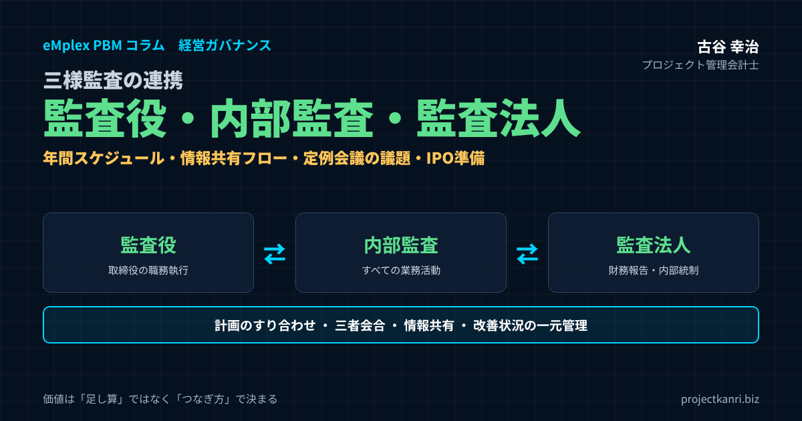

三様監査とは？監査役・内部監査・監査法人の違いと連携方法―年間スケジュール、情報共有フロー、定例会議の議題、不正発見時の連携、IPO準備で説明できる監査体制まで

結論：三様監査の価値は「三つの監査の足し算」ではなく「つなぎ方」で決まる
この記事のポイント
- 三様監査＝監査役監査・会計監査人監査・内部監査。価値は「足し算」でなく「つなぎ方」で決まる
- 連携の出発点は監査計画のすり合わせと年間スケジュール
- 定例会議は報告で終わらせず、会社のリスクについて意見を交わす場に
- 内部監査が監査役にも直接報告できる経路を確保（デュアルレポーティング）
- IPO準備では、3つの監査がそろい連携を記録で説明できることが必要
プロジェクト管理会計士の古谷です。上場の準備をご支援していると、監査役、内部監査の担当者、監査法人の三者が、それぞれ真面目に監査を行っているにもかかわらず、互いにほとんど話をしていない、という場面に出会うことがあります。監査役は内部監査の結果を知らず、内部監査の担当者は監査法人がどこを重点的に見ているかを知らず、監査法人は監査役が取締役会でどのような懸念を示しているかを知らない。
この状態では、三つの監査は、同じ領域を重ねて調べる一方で、どの監査も見ていない領域を残してしまいます。会社の側も、三者からばらばらに同じような資料を求められ、対応に追われます。そして何より、一つの監査が見つけた問題の兆候が、他の監査に伝わらないまま埋もれてしまうおそれがあります。
本記事でお伝えしたいのは、三様監査の価値は、三つの監査をそれぞれ行うことではなく、三つの監査をつなぐことで生まれるという考え方です。監査計画をすり合わせて重複と漏れをなくす。監査の結果と問題の兆候を速やかに共有する。定期的に集まって、会社のリスクについて意見を交わす。そうすることで、限られた監査の資源で、会社のリスクを漏れなく、深く見ることができます。
私は、エンプレックスで取締役CFOとして、上場の準備と監査法人の対応を担当し、フロンティアハウスでも上場の準備の責任者を務めました。監査を受ける側として三様監査に向き合ってきた経験と、200社を超える企業の経営管理のご支援の経験から、三様監査の連携の実務をお伝えします。三様監査の基本と、内部統制の業務分掌については、別のコラム「内部統制の業務分掌とアクセス権限設計」でも触れていますので、あわせてご覧ください。
三様監査とは：定義と目的
三様監査とは、会社の中で行われる三つの監査、すなわち監査役による監査、会計監査人である監査法人による監査、そして内部監査部門による内部監査を総称した言葉です。監査役会設置会社では監査役、監査等委員会設置会社では監査等委員会、指名委員会等設置会社では監査委員会が、監査役監査に相当する役割を担います。本記事では、これらをまとめて監査役等と呼ぶことがあります。
三つの監査は、立場や役割はそれぞれ異なりますが、会社の健全な成長に寄与するという共通の目的を持っています。
| 監査 | 監査の主体 | 主な対象 |
|---|---|---|
| 監査役監査 | 監査役（監査等委員会・監査委員会） | 取締役の職務の執行 |
| 会計監査人監査 | 会計監査人（監査法人・公認会計士） | 計算書類・財務諸表、内部統制報告書 |
| 内部監査 | 内部監査部門（従業員） | 組織内のすべての業務活動 |
三様監査という言葉そのものは、法令で定められた用語ではありません。監査役監査と会計監査人監査は会社法などの法令に根拠がありますが、内部監査は法定の監査ではなく、会社が自らの判断で行う監査です。それでも、上場企業や上場を目指す会社では、内部監査の体制が整っていることが当然の前提とされており、三つの監査がそろってはじめて、会社の監査の体制は完成すると考えられています。
三様監査という言葉は、上場の準備や、上場企業のガバナンスの文脈でよく使われます。上場の審査では、監査役、内部監査、監査法人の三つの監査の体制が整っているかどうか、そしてそれらが連携しているかどうかが確認されます。三様監査は、上場企業にとって、会社の監査の体制そのものを表す言葉だと言えるでしょう。
三様監査を構成する3つの監査の役割
三つの監査の役割を、もう少し詳しく見ていきましょう。
| 監査 | 役割 | 主な活動 |
|---|---|---|
| 監査役監査 | 経営から独立した立場で取締役の職務執行を監査 | 取締役会への出席・意見、業務監査・会計監査、差止請求 |
| 会計監査人監査 | 外部の専門家として財務報告の信頼性を保証 | 会社法監査、金商法監査、内部統制監査 |
| 内部監査 | 業務の適正性、内部統制の有効性、リスク管理の確認 | 業務の監査、改善の提言、改善状況の確認 |
監査役監査は、取締役の職務の執行を監査するものです。監査役は会社法で定められた役員で、株主総会で選ばれます。取締役の職務の執行が、法令や定款に違反していないか、著しく不当な点がないかを、業務の監査と会計の監査の両面から確認します。取締役会に出席して意見を述べ、必要に応じて取締役の行為の差止めを請求することもできます。監査役は、経営から独立した立場で、株主に代わって経営を監視する存在です。
会計監査人監査は、監査法人や公認会計士が、会社の計算書類や財務諸表が適正に作成されているかを監査するものです。上場企業では、会社法に基づく監査と、金融商品取引法に基づく財務諸表の監査、そして内部統制報告書の監査を、同じ監査法人が行うのが一般的です。外部の専門家として、財務報告の信頼性を保証する役割を担います。
内部監査は、会社の内部の部門が、業務が規程やルールに沿って適切に行われているか、内部統制が有効に機能しているか、リスクが適切に管理されているかを確認するものです。対象は、会計に限らず、組織のすべての業務活動です。社長などの経営者の直轄の部門として置かれることが多く、監査の結果を経営者に報告し、改善を促します。
三つの監査は、それぞれの監査の基準や指針に沿って行われます。監査役は日本監査役協会の監査役監査基準などを、監査法人は監査基準や日本公認会計士協会の実務指針を、内部監査部門は内部監査の基準などを、それぞれ参考にして監査を行います。互いがどのような基準で、何を目的に監査をしているのかを理解しておくことが、連携の前提になります。
三様監査の違いを比較する
三つの監査の違いを、主な観点で比較すると、次のようになります。
| 観点 | 監査役監査 | 会計監査人監査 | 内部監査 |
|---|---|---|---|
| 法的根拠 | 会社法 | 会社法・金融商品取引法 | 法定ではない（会社の判断） |
| 立場 | 株主総会で選任される役員 | 外部の専門家 | 経営者直轄の内部部門が多い |
| 主な対象 | 取締役の職務執行 | 財務報告 | すべての業務活動 |
| 強み | 独立性と強い権限 | 会計・監査の専門性 | 業務の実態に詳しく範囲が広い |
| 限界 | 人数が限られ現場の細部は見にくい | 会計中心、監査時期が限られる | 経営者自身への監視に限界 |
| 報告先 | 株主（監査報告）、取締役会 | 株主・投資家（監査報告書）、監査役等 | 経営者（＋監査役・取締役会） |
この比較から分かるのは、三つの監査が、それぞれ異なる強みと限界を持っているということです。監査役は経営から独立し、取締役の職務の執行を見る強い権限を持っていますが、人数が限られ、日々の業務の細部まで見ることは難しい。監査法人は財務報告の専門家ですが、会計に関係する範囲が中心で、監査の時期も限られます。内部監査は会社のすべての業務を見ることができ、業務の実態に詳しいですが、経営者の配下にあるため、経営者そのものに対する監視には限界があります。
三つの監査が連携することで、それぞれの限界を、互いの強みで補うことができます。内部監査が見つけた業務の問題を監査役が知れば、取締役の監督の責任を問うことができます。監査法人が見つけた会計の問題を内部監査が知れば、その原因となった業務の流れを調べることができます。監査役が感じた経営の懸念を監査法人が知れば、監査の重点を調整することができます。これが、三様監査の連携の本質です。
三つの監査の時間の軸の違いにも注目しておきましょう。監査法人の監査は、主に四半期や期末の決算の時期に集中します。監査役の監査は、取締役会への出席などを通じて、一年を通じて継続的に行われます。内部監査は、年間の計画に沿って、部門ごとに順番に行われます。時間の軸が違うからこそ、互いの情報を共有することで、一年を通じて会社の状況を切れ目なく見ることができるのです。
三様監査の法的な根拠と、連携に関する定め
監査役監査と会計監査人監査には、会社法などの法令に根拠があり、その中には、両者の連携に関する定めもあります。
| 定め | 内容 |
|---|---|
| 会社法（会計監査人→監査役） | 取締役の職務執行に関する不正の行為や法令・定款違反の重大な事実を発見したときは、遅滞なく監査役に報告 |
| 会社法（監査役→会計監査人） | 職務を行うため必要があるとき、会計監査人に監査に関する報告を求めることができる |
| 会社法（選任・報酬） | 会計監査人の選任等の議案の内容や報酬について監査役が関与 |
| 金融商品取引法 | 監査人が法令違反等の事実を発見したときの監査役等への通知など |
| コーポレートガバナンス・コード | 内部監査部門と取締役・監査役の連携、取締役会・監査役会への直接報告の仕組み |
会社法では、会計監査人は、その職務を行うにあたって取締役の職務の執行に関して不正の行為や法令・定款に違反する重大な事実があることを発見したときは、遅滞なく、これを監査役に報告しなければならないとされています。また、監査役は、その職務を行うために必要があるときは、会計監査人に対して、その監査に関する報告を求めることができます。さらに、会計監査人の選任などに関する議案の内容や、会計監査人の報酬については、監査役が関与する仕組みが設けられています。
金融商品取引法でも、監査人が財務書類の監査の過程で法令に違反する事実などを発見したときに、会社の監査役等に通知することなどが定められています。
一方、内部監査については、法令の定めはありません。しかし、コーポレートガバナンス・コードでは、内部監査部門と取締役、監査役との連携を確保すること、そして内部監査部門が取締役会や監査役会に対しても適切に直接報告を行う仕組みを構築することなどが求められてきました。このように、三様監査の連携は、法令とコードの両面から、上場企業に期待されているものなのです。
三様監査の連携が必要な理由
三様監査の連携が必要な理由を、改めて整理しておきましょう。
| 理由 | 内容 |
|---|---|
| ① 重複と漏れをなくす | 計画をすり合わせ、リスクの高い領域に資源を集中 |
| ② 問題を早く見つける | 各監査の情報を組み合わせて兆候を捉える |
| ③ 受ける側の負担を減らす | 資料や結果を共有し、同じ資料の作成を減らす |
| ④ 監査の質を高める | 互いの視点・知見を取り入れる |
一つ目は、監査の重複と漏れをなくすことです。三つの監査が別々に計画を立てると、同じ部門の同じ業務を三者がそれぞれ調べる一方で、どの監査も見ていない部門や業務が生じます。計画をすり合わせることで、限られた監査の資源を、会社のリスクの高い領域に集中させることができます。
二つ目は、問題を早く見つけることです。一つの監査が見つけた小さな問題の兆候が、他の監査の情報と組み合わさることで、大きな問題の発見につながることがあります。内部監査で見つけた承認の手続きの形骸化と、監査法人が見つけた売上の計上の時期の不自然さが、実は同じ不正につながっていた、ということもあり得ます。
三つ目は、監査を受ける側の負担を減らすことです。三者から同じような資料を何度も求められる状態は、会社の側にとって大きな負担です。監査の資料や結果を共有すれば、同じ資料を何度も作る手間を減らすことができます。
四つ目は、監査の質を高めることです。監査役は内部監査の結果を活用して、取締役の職務の執行の監査を深めることができます。監査法人は内部監査の結果や監査役の問題意識を参考に、監査の重点を絞ることができます。内部監査は監査法人の専門的な知見から学ぶことができます。互いの視点を取り入れることで、それぞれの監査の質が高まります。
連携①：監査役と内部監査の連携
三様監査の中で、最も日常的な連携が求められるのが、監査役と内部監査の連携です。
監査役は取締役の職務の執行を監査し、内部統制の整備と運用の状況を監視する役割を担っています。一方、内部監査部門は、内部統制の整備と運用の状況を、業務の現場に入って監査します。監査役は人数が限られ、すべての業務の現場を見ることはできません。内部監査の結果は、監査役にとって、内部統制が機能しているかを判断するための重要な情報源になります。
| ポイント | 内容 |
|---|---|
| 計画の共有 | 内部監査計画を監査役に説明し、意見を反映 |
| 結果の報告 | 内部監査報告書を監査役にも同時に送付 |
| デュアルレポーティング | 経営者と監査役の両方に報告する経路 |
| 体制への支援 | 内部監査の人員・予算・範囲について監査役が意見 |
| 往査の同行 | 必要に応じて監査役が内部監査に同行 |
監査役と内部監査の連携で特に大切なのが、内部監査の独立性の確保です。内部監査部門は、社長の直轄の部門として置かれることが多いため、経営者の意向によって監査の範囲や結果の報告が影響を受けるおそれがあります。監査役が内部監査の計画と結果を直接把握し、内部監査部門が監査役にも直接報告する仕組みがあれば、内部監査の独立性と実効性を高めることができます。経営者と監査役の両方に報告する、いわゆるデュアルレポーティングの考え方です。
また、内部監査部門の人員や予算、監査の範囲について、監査役が意見を述べることも、内部監査の体制を強くするうえで有効です。内部監査部門だけでは、経営者に対して人員の増強や監査の範囲の拡大を求めにくいことがあるからです。
監査役と内部監査の担当者が、定期的に、たとえば月に一度、短い時間でも顔を合わせる機会を持つことをおすすめします。三者の会合だけでは、年に数回しか話をする機会がありません。日常的な情報の交換があれば、監査役は会社の現場の状況をより深く知ることができ、内部監査の担当者は監査役の問題意識を監査の計画に反映させることができます。
連携②：監査役と監査法人の連携
監査役と監査法人の連携は、会社法の定めもあり、比較的制度化されている連携です。
| 時期 | 主な内容 |
|---|---|
| 期初 | 監査計画、重点領域、リスクの認識、監査体制 |
| 期中 | 四半期レビュー、監査の進捗、気になる事項、KAMの候補 |
| 期末 | 監査の結果、KAM、内部統制の不備、監査報酬・品質 |
| 随時 | 不正の兆候、重大な法令違反の疑いの報告 |
監査役と監査法人は、期初に監査の計画について、期中に監査の進捗と気になる事項について、期末に監査の結果について、それぞれ意見を交わすのが一般的です。監査役は、監査法人の監査の方法と結果が相当であるかを判断する立場にあり、そのためにも、監査法人がどのような計画で、どこを重点的に見ているのかを理解しておく必要があります。
上場企業の監査では、監査上の主要な検討事項、いわゆるKAMの記載が求められています。KAMは、当期の財務諸表の監査で特に重要であると監査人が判断した事項で、その決定の過程では、監査人と監査役等との協議が重要な役割を果たします。監査役は、KAMの候補となる事項について、監査法人と早い段階から意見を交わしておくことが大切です。
監査役は、会社の経営の状況や、取締役会での議論、経営者の考え方について、監査法人よりも深く知っています。その情報を監査法人と共有することで、監査法人は、会社のリスクをより的確に把握し、監査の重点を調整することができます。逆に、監査法人が監査の過程で感じた懸念、たとえば経営者の姿勢や、経理の体制の弱さについての懸念を監査役が知ることで、監査役は取締役の監督に生かすことができます。
監査役と監査法人の意見交換では、監査法人から、経理の体制や決算の早期化の状況、見積もりを伴う会計の処理についての評価を聞いておくことも有益です。監査法人は、多くの会社の監査を通じて、他の会社と比べた自社の管理の水準を知っています。その評価は、監査役が取締役に管理の体制の強化を促す際の、客観的な材料になります。
連携③：内部監査と監査法人の連携
三つの組み合わせのうち、連携が手薄になりがちなのが、内部監査と監査法人の連携です。監査法人は経理や財務の部門と密接に関わることが多い一方、内部監査部門との関係はあまり深くない傾向があります。
しかし、内部監査部門が財務報告に係る内部統制の評価を行っている場合には、両者の連携と意思疎通が欠かせません。内部統制の評価の範囲、評価の方法、評価の時期、見つかった不備の評価について、内部監査部門と監査法人の認識がずれていると、期末になって評価のやり直しが必要になることがあります。
| ポイント | 内容 |
|---|---|
| 内部統制評価の範囲と方法 | 評価範囲・サンプル・時期の認識をそろえる |
| 不備の評価 | 不備の重要性の判断を早めに協議 |
| 結果の共有 | 内部監査結果の共有、利用の可否を相談 |
| 報告会への同席 | 監査法人の報告の場に内部監査担当者が出席 |
内部監査は法定の監査ではありませんが、監査法人が監査の結果を報告する場に内部監査部門の担当者が出席するなどして接点を持つことは、監査の質を高めるうえで有効です。また、内部監査の結果を監査法人と共有することで、監査法人が内部監査の結果を参考にできる場合もあります。どの範囲で内部監査の結果を利用できるかは、監査法人の判断によりますので、早い段階で相談しておきましょう。
内部監査部門にとって、監査法人は、監査の手法を学ぶ貴重な相手でもあります。サンプルの選び方、証跡の確認の方法、不備の評価の考え方。監査法人の担当者と意見を交わす中で、内部監査の手法そのものを高めていくことができます。
経営者と取締役会の役割：三様監査を機能させる土台
三様監査の連携は、監査をする三者だけで成り立つものではありません。三者が連携できる環境を整えるのは、経営者と取締役会の役割です。
| 主体 | 役割 |
|---|---|
| 経営者 | 監査に必要な情報の適時提供、内部監査の人員・予算の確保、指摘への対応 |
| 取締役会 | 監査結果と改善状況の定期報告の受領、対応の指示、内部監査からの直接報告の機会 |
| 監査役 | 三者連携の要、内部監査の支援、会計監査人の評価 |
経営者には、監査に必要な情報を、三者に適時に提供する責任があります。経営会議の資料、重要な契約、大型のプロジェクトの状況、内部通報の状況。監査をする三者が、会社の状況を正しく把握できるよう、情報を開いておくことが大切です。監査に協力的でない姿勢は、監査の質を下げるだけでなく、監査をする側に、何かを隠しているのではないかという疑念を生みます。
内部監査部門の人員と予算を確保することも、経営者の役割です。内部監査部門が十分な人員を持たなければ、監査の範囲は狭くなり、三様監査の連携も形だけになります。
取締役会は、監査の結果と、見つかった問題の改善の状況について、定期的に報告を受け、必要な対応を指示します。内部監査部門が取締役会に直接報告する機会を設けることも、内部監査の独立性と実効性を高めるうえで有効です。経営者と取締役会が、監査を会社を良くするための仕組みとして重視している姿勢を示すことが、三様監査の連携を根づかせる最大の力になります。
三様監査の進め方①：監査計画のすり合わせ
三様監査の連携の出発点は、監査計画のすり合わせです。事業年度の初めに、三者がそれぞれの監査計画を持ち寄り、重点の領域、監査の対象、時期を確認し合います。
| 手順 | 内容 |
|---|---|
| 1 リスク認識の共有 | 新規事業、大型PJ、システム更新、組織変更、M&A、法改正など |
| 2 重点領域の確認 | 各監査の重点領域と対象部門・業務 |
| 3 重複と漏れの調整 | 同じ業務の重複監査を避け、空白の領域を誰が見るか決める |
| 4 時期の調整 | 決算期など繁忙期を避け、部門の負担を分散 |
| 5 記録 | 合意した計画を記録し、三者で共有 |
計画のすり合わせで最初に行うのは、会社のリスクの認識の共有です。今年度、会社にとって重要なリスクは何か。新しい事業、大型のプロジェクト、システムの入れ替え、組織の変更、M&A、法令の改正。三者がそれぞれの立場から感じているリスクを出し合い、共通の認識をつくります。
そのうえで、それぞれの監査の重点の領域を確認し、重複と漏れを調整します。たとえば、内部監査が営業の部門の売上の計上の手続きを監査する計画であれば、監査法人はその結果を参考にできるかを検討する。監査役が子会社の管理の体制に懸念を持っているのであれば、内部監査がその年度に子会社の監査を計画する。こうした調整によって、三者の監査の資源を効率よく配分します。
時期の調整も大切です。三者の監査が同じ時期に同じ部門に集中すると、監査を受ける部門の負担が大きくなります。とくに、月次の決算や期末の決算の時期には、経理の部門の負担に配慮して、監査の時期を分散させることが望ましいでしょう。
計画のすり合わせの結果は、それぞれの監査計画の文書に反映させておきましょう。たとえば、内部監査の計画に「監査法人の重点領域を踏まえ、今年度は売上の計上のプロセスを重点的に監査する」「監査役の要請を踏まえ、子会社の管理の体制を監査する」と書いておけば、計画の根拠が明確になり、連携の記録にもなります。
三様監査の進め方②：年間スケジュール
三様監査の連携を確実に回すためには、年間のスケジュールを決めておくことが効果的です。3月決算の会社を例に、年間のスケジュールの例を示します。
| 時期 | 主な連携 |
|---|---|
| 4〜6月 | 期末監査・内部統制評価の最終確認、監査報告、株主総会、前年度結果の共有 |
| 6〜7月 | 三者会合①：今年度の監査計画のすり合わせ、リスク認識の共有 |
| 8月・11月・2月 | 四半期レビュー時の監査役と監査法人の意見交換、内部監査結果の監査役への報告 |
| 10〜11月 | 三者会合②：進捗、気になる事項、内部統制の整備・運用評価の状況、KAM候補 |
| 2〜3月 | 三者会合③：期末に向けた重点事項、不備の評価、改善状況の確認 |
| 随時 | 不正の兆候・重大な問題の速やかな共有 |
一つの例です。会社の規模と体制に合わせて調整してください。
期初の4月から6月は、前年度の監査の結果の報告と、今年度の監査の計画の策定とすり合わせの時期です。期末の監査、株主総会と重なるため、三者の会合は、総会の後の時期に設定することが多いでしょう。
期中の7月から翌年の2月は、それぞれの監査を実施し、その結果を共有する時期です。四半期の決算のレビューの時期に合わせて、監査役と監査法人が意見を交わし、内部監査の結果は、監査役に定期的に報告します。内部統制の評価についても、期中に整備と運用の評価を進め、見つかった不備を共有します。
期末の3月から5月は、期末の監査と、内部統制の評価の最終の確認、監査報告の作成の時期です。KAMの検討、内部統制の不備の評価について、三者が意見を交わし、認識をそろえます。
このスケジュールは一つの例です。会社の規模や監査の体制に合わせて、無理のない頻度と時期を決めてください。大切なのは、スケジュールを事前に三者で合意し、会合の予定を早めに確保しておくことです。
スケジュールを決めるときには、監査を受ける部門の繁忙の時期にも配慮しましょう。プロジェクト型ビジネスの会社では、年度末に検収や納品が集中することが多く、その時期に現場の部門への監査が重なると、業務に支障が出ることがあります。三者で監査の時期を調整することは、監査を受ける側への配慮でもあります。
三様監査の進め方③：情報共有のフロー
三様監査の連携は、定期的な会合だけで成り立つものではありません。日々の監査の中で見つかった情報を、必要な相手に、必要なタイミングで届けるフローを決めておくことが大切です。
| 情報 | 発信 | 共有先 | タイミング・方法 |
|---|---|---|---|
| 監査計画 | 各監査 | 他の2者 | 期初の三者会合 |
| 内部監査の結果 | 内部監査 | 経営者・監査役（・監査法人） | 報告書の同時送付 |
| 会計監査の結果 | 監査法人 | 監査役（・内部監査） | 報告会、内部監査担当者の同席 |
| 取締役会での懸念 | 監査役 | 内部監査・監査法人 | 三者会合、必要に応じて随時 |
| 不正の兆候・重大事項 | 発見した監査 | 監査役を中心に他の2者 | 直ちに（定期会合を待たない） |
| 改善の状況 | 内部監査（取りまとめ） | 他の2者 | 三者会合、改善状況一覧 |
共有すべき情報は、大きく、計画、結果、そして緊急の事項の三つに分けられます。計画と結果は、定期的な会合や報告書で共有します。緊急の事項、たとえば不正の兆候や、重大な法令の違反の疑い、財務報告に重要な影響を与える問題を見つけた場合は、定期の会合を待たずに、速やかに共有します。
情報の共有の方法も決めておきましょう。内部監査の報告書を、監査役にも同時に送付する。監査法人の監査の結果の報告に、内部監査の担当者も同席する。監査役が取締役会で示した懸念を、議事録などで内部監査部門と共有する。共有の方法が決まっていれば、担当者が替わっても、連携が途切れることはありません。
ただし、情報の共有には、守秘の配慮も必要です。内部通報の情報や、調査の途中の情報など、取り扱いに注意が必要な情報については、共有の範囲と方法を、事前に三者で確認しておきます。
三様監査の進め方④：定例会議（三者協議会）の議題
三様監査の連携の中心になるのが、三者が一堂に会する定例の会議です。会社によって、三様監査会議、三者協議会などと呼ばれます。
| 議題 | 内容 |
|---|---|
| 1 前回の対応事項 | 決めた事項の進捗 |
| 2 各監査の計画・進捗 | 監査役・内部監査・監査法人から |
| 3 見つかった問題と改善状況 | 改善状況一覧の確認 |
| 4 会社のリスクについての意見交換 | 三者が感じている懸念、経営環境の変化 |
| 5 内部統制の評価 | 範囲、進捗、不備の評価 |
| 6 次回までの対応事項 | 担当と期限 |
会議の頻度は、年に二回から四回程度が一般的です。期初に計画のすり合わせ、期中に進捗と気になる事項の共有、期末に結果の確認を行う、というように、年間のスケジュールに組み込みます。
会議の議題は、毎回、ある程度決まった型で進めると、議論の漏れを防げます。それぞれの監査の計画と進捗、見つかった問題と改善の状況、会社のリスクの認識、内部統制の評価の状況、そして次の会議までの対応事項。とくに、三者がそれぞれ感じている会社のリスクについて、率直に意見を交わす時間を確保することが大切です。報告の場で終わらせず、意見を交わす場にすることが、三様監査の連携の実効性を高めます。
会議の事務局は、監査役の補助をする担当者や、内部監査部門が担うことが多いでしょう。会議の議事の要旨と、決まった対応事項を記録し、次の会議の冒頭で進捗を確認します。この記録は、上場の審査で三様監査の連携の体制を説明する際の証跡にもなります。
会議に出席するのは、監査役、内部監査の責任者、監査法人の業務の執行の責任者とその担当者が基本です。議題によっては、経理の責任者や、リスク管理の担当者に出席を求めることもあります。ただし、経営者が同席すると、率直な意見の交換が難しくなる場合があるため、経営者の同席の有無は、議題に応じて判断するとよいでしょう。
監査結果と改善状況の共有
三つの監査が見つけた問題は、それぞれの監査の報告書に記載されますが、その後の改善の状況まで三者で共有されていることは少ないかもしれません。
| 項目 | 内容 |
|---|---|
| 指摘元 | 監査役・内部監査・監査法人 |
| 指摘日・内容 | 問題の内容と重要度 |
| 対応部門・担当者 | 改善の責任者 |
| 改善の方法・期限 | 具体的な改善策と期限 |
| 状況 | 未着手・対応中・完了・確認済み |
| 確認者 | 改善を確認した監査 |
見つかった問題と、その改善の状況を、三者で共通の一覧として管理することをおすすめします。どの監査が、いつ、どの問題を見つけ、誰が、いつまでに、どのように改善するのか。改善の状況はどうか。一覧があれば、同じ問題を別の監査が改めて指摘するという重複を防ぎ、改善が進んでいない問題を三者で把握することができます。
改善の状況の確認は、主に内部監査部門が担うことが多いでしょう。内部監査部門が、改善の状況を定期的に確認し、三者の会議で報告する。監査役は、改善が進んでいない問題について、取締役に改善を促す。監査法人は、財務報告に関わる問題の改善の状況を、監査の中で確認する。こうした役割の分担を決めておくと、改善の確認が確実に行われます。
改善の状況の一覧は、取締役会への報告にも使えます。年に一度か二度、三様監査で見つかった主な問題と、その改善の状況を取締役会に報告すれば、取締役会は、会社の内部管理の課題を把握し、必要な経営資源の配分を判断することができます。
不正の兆候を見つけたときの三様監査の連携
三様監査の連携が最も試されるのが、不正の兆候を見つけたときです。
| 段階 | 内容 |
|---|---|
| 1 報告 | 発見した監査から監査役へ速やかに報告（経営者の関与が疑われる場合も直接） |
| 2 初期判断 | 監査役を中心に、事実の確認と影響の見積もり |
| 3 調査体制 | 調査の主導者、共有の範囲、証拠保全、必要に応じ外部専門家 |
| 4 調査と共有 | 三者で調査の進捗と結果を共有 |
| 5 対応と再発防止 | 取締役による対応、開示の要否、内部統制の改善 |
不正の兆候を見つけたときに大切なのは、情報を、速やかに、適切な相手に伝えることです。内部監査の担当者が、経営者に近い立場の人の関与が疑われる不正の兆候を見つけた場合、経営者にだけ報告すると、情報が握りつぶされるおそれがあります。そうした場合に備えて、内部監査部門が監査役に直接報告できる経路を確保しておくことが重要です。
監査法人が監査の過程で不正の兆候を見つけた場合は、先に述べたとおり、会社法や金融商品取引法の定めに基づいて、監査役等に報告や通知が行われます。監査役は、その情報を受けて、必要に応じて内部監査部門に調査を依頼し、取締役に対応を求めます。
調査の段階では、証拠の保全、関係者への聞き取り、調査の範囲の決定など、慎重な対応が求められます。三者がそれぞれ独自に調査を始めると、証拠が失われたり、関係者に警戒されたりするおそれがあります。誰が調査を主導し、誰がどのような情報を共有するのかを、三者で速やかに決めることが大切です。不正の規模や性質によっては、外部の専門家を含めた調査の体制を検討することもあります。
こうした対応を、いざというときに慌てずに行えるよう、不正の兆候を見つけたときの報告の経路と、三者の連携の手順を、平時から決めておきましょう。
内部通報の制度との連携も重要です。内部通報の窓口に寄せられた情報の中には、不正の兆候を示すものが含まれていることがあります。内部通報の窓口を、経営者から独立した監査役などにも設けておくこと、そして通報の状況を、通報者の保護に配慮しながら、監査役と内部監査部門が把握できるようにしておくことが、不正の早期の発見につながります。
内部統制（J-SOX）の評価と三様監査
上場企業では、財務報告に係る内部統制の評価と報告が求められます。この内部統制の評価は、三様監査の連携が特に重要になる場面です。
| 主体 | 役割 |
|---|---|
| 経営者（内部監査が実務を担うことが多い） | 内部統制の整備・運用の評価、内部統制報告書 |
| 監査法人 | 経営者の評価の適切性の監査（内部統制監査） |
| 監査役 | 内部統制の整備・運用の監視、評価過程の確認 |
| 三者共通 | 評価範囲と不備の重要性の判断を計画段階から協議 |
内部統制の評価は、経営者が行うものですが、実務では内部監査部門が評価の作業を担うことが多いでしょう。監査法人は、経営者の評価が適切かどうかを監査します。監査役は、内部統制の整備と運用の状況を監視し、経営者の評価の過程を確認します。
三者の認識がずれやすいのが、評価の範囲と、見つかった不備の重要性の判断です。どの事業の拠点や業務のプロセスを評価の範囲に含めるのか。見つかった不備が、開示すべき重要な不備にあたるのかどうか。これらについて、計画の段階から三者が意見を交わしておくことで、期末になって評価のやり直しや、判断の食い違いが生じることを防げます。
2023年に改訂された内部統制の基準と実施基準でも、評価の範囲について、計画の段階や状況が変わったときなどに、必要に応じて監査人と協議することが適切であることが明確にされています。内部監査部門と監査法人の協議に、監査役も関わることで、評価の範囲の決定の過程の透明性が高まります。
グループ会社・子会社の三様監査
子会社を持つ会社では、三様監査の対象は、親会社だけでなく、グループ全体に広がります。
| 主体 | 連携の内容 |
|---|---|
| 親会社の監査役 | 子会社監査役との連絡会、必要に応じた子会社の調査 |
| 親会社の内部監査 | リスクに応じた子会社監査の計画と実施 |
| 監査法人 | 連結財務諸表の監査、重要な子会社の監査 |
| グループ共通 | 子会社の監査情報を親会社の三者会合で共有、M&A後は早期に体制整備 |
親会社の監査役は、子会社の監査役との連携を通じて、グループ全体の状況を把握します。子会社に監査役がいる場合は、定期的にグループの監査役の連絡会を開き、各社の監査の結果や懸念を共有します。子会社に監査役がいない場合は、親会社の監査役が、子会社の調査の権限を用いて、必要な情報を得ることもあります。
内部監査部門は、グループの内部監査の計画の中に、子会社の監査を組み込みます。すべての子会社を毎年監査するのは難しいため、子会社のリスクの大きさに応じて、監査の頻度と範囲を決めます。監査法人は、連結の財務諸表の監査の中で、重要な子会社の監査を行います。
グループの三様監査で大切なのは、子会社の情報が、親会社の三者に届く仕組みをつくることです。子会社で起きた問題が、親会社の監査の三者に伝わらないまま大きくなる、という事態を防ぐため、子会社の監査役、内部監査、監査法人の情報を、親会社の三者会合で共有する流れを決めておきましょう。M&Aで新しく子会社になった会社については、とくに早い段階で、三様監査の体制を整えることが大切です。
IPO・上場準備における三様監査の体制づくり
上場を目指す会社にとって、三様監査の体制は、上場の審査で確認される重要な項目です。監査役、内部監査、監査法人の三つの監査がそろい、それぞれが機能し、互いに連携していることを説明できる必要があります。
| 監査 | 整えること | 時期の目安 |
|---|---|---|
| 監査法人 | ショートレビュー、監査契約、直前々期からの監査 | N-3期〜N-2期 |
| 監査役（等） | 常勤監査役の確保、社外監査役の選任、機関設計の検討 | N-2期〜N-1期 |
| 内部監査 | 担当者の任命、内部監査規程・計画、監査の開始（自己監査の回避） | N-2期〜 |
| 連携 | 三者会合、情報共有の経路、記録 | N-2期〜 |
上場の準備では、三つの監査の体制を、段階的に整えていきます。監査法人とは、ショートレビューの後に監査の契約を結び、直前々期から監査を受けます。監査役については、常勤の監査役の確保や、社外の監査役の選任を進め、監査役会設置会社や監査等委員会設置会社への移行を検討します。内部監査については、内部監査の担当者を置き、内部監査の規程と計画を整え、監査を開始します。
上場の準備の会社で問題になりやすいのが、内部監査の体制です。少ない人数の会社では、内部監査の専任の担当者を置くことが難しく、管理部門の担当者が兼務することがあります。しかし、内部監査の担当者が、自分の担当の業務を監査することになってはいけません。管理部門以外の部門の社員が内部監査を担当する、管理部門の監査を外部の専門家に委託する、といった工夫で、自己監査にならないよう設計します。
そして、三つの監査がそろっただけでは不十分です。三者が連携していることを、会合の記録、情報の共有の記録、監査の計画のすり合わせの記録で示せるようにしておくことが大切です。上場の審査の質問や、監査役のヒアリングでは、三様監査の連携の状況が確認されることがあります。上場の準備の全体のチェック項目については、別のコラム「IPO準備のチェックリスト集」も、あわせてご覧ください。
上場の後も、三様監査の体制は、コーポレート・ガバナンスに関する報告書や、有価証券報告書のコーポレート・ガバナンスの状況の記載の中で、外部に説明することになります。監査役の監査の状況、内部監査の状況、会計監査の状況、そしてそれらの相互の連携について、具体的に説明できるよう、上場の準備の段階から運用と記録を積み重ねておきましょう。
会計監査人の評価と、監査役の役割
三様監査の連携の中で、監査役が担う重要な役割の一つが、会計監査人の評価です。会計監査人を再任するのか、交代するのかを判断する際には、監査役が会計監査人の監査の品質や独立性、専門性を評価することが求められます。
| 観点 | 確認すること |
|---|---|
| 品質 | 監査計画がリスクを捉えているか、指摘が的確か |
| 独立性 | 会社からの独立性、非監査業務との関係 |
| 専門性・体制 | 業種の理解、監査チームの体制 |
| コミュニケーション | 経営者・経理・監査役・内部監査との意思疎通 |
| 社内の意見 | 経理部門・内部監査からの評価 |
会計監査人の評価のためには、日頃の連携の中で得た情報が欠かせません。監査の計画は会社のリスクを適切に捉えているか。監査の過程で、経営者や経理の部門と十分なコミュニケーションを取っているか。指摘は的確か。監査チームの体制は十分か。経理の部門や内部監査の担当者から、監査法人の対応についての意見を聞くことも、評価の参考になります。
上場の準備の会社では、監査法人の選定そのものが難しくなっていると言われます。監査法人を一度選んだら終わりではなく、監査役が継続して監査の品質を確認し、会社と監査法人の関係を健全に保つことが大切です。監査法人の選定と対応については、別のコラム「上場準備における監査法人選定と対応実務の勘所」もご参照ください。
小規模の会社・上場準備の初期の三様監査
社員の数が少ない会社や、上場の準備の初期の会社では、三様監査のすべてを、上場企業と同じ水準で整えることは難しいでしょう。それでも、三様監査の考え方を、規模に合った形で取り入れることはできます。
| 工夫 | 内容 |
|---|---|
| 短時間の三者会合 | 年2〜3回、1時間程度でも気になる事項を共有 |
| 監査役と内部監査の二人三脚 | 監査役が内部監査担当者を支え、情報を受け取る |
| 内部監査の外部委託 | 自己監査を避け、専門性を補う |
| 記録 | 会合の要旨と対応事項を簡潔に残す |
監査役が一人、内部監査の担当者が兼務で一人、監査法人の担当者が数名。そうした体制でも、年に数回、三者が集まって情報を交わす場を設けることはできます。会合の時間は一時間でも構いません。それぞれが気になっていることを共有するだけでも、連携の効果はあります。
小規模の会社で特に大切なのは、監査役と内部監査の担当者の関係です。人数が少ないからこそ、監査役が内部監査の担当者を支え、内部監査の担当者が監査役に情報を届けるという、二人三脚の関係が、会社の監査の体制の土台になります。
上場の準備の初期の段階では、監査法人との関係がまだショートレビューの段階にとどまっていることもあります。その場合でも、ショートレビューの指摘事項を、監査役と内部監査の担当者が共有し、改善の状況を一緒に確認することから、三様監査の連携は始められます。
プロジェクト型ビジネスの三様監査で重点を置きたい領域
建設、システム開発、コンサルティング、映像やイベントの制作といったプロジェクト型ビジネスの会社では、三様監査で重点を置くべき領域があります。
| 監査 | 重点の例 |
|---|---|
| 監査法人 | 進捗度・見積総原価、検収時期、仕掛品の回収可能性、受注損失引当金 |
| 内部監査 | PJ予算の承認、変更管理、工数の記録と承認、発注・検収 |
| 監査役 | 大型案件の受注判断、採算悪化案件への取締役の対応 |
最も重要なのは、売上の計上と原価の計算です。プロジェクトの進捗に応じて売上を計上する場合、進捗の見積もりが適切か、見積もりの総原価が適切か。完成した時点で売上を計上する場合、検収の時期が適切か。期末の仕掛品の原価に、回収できない原価が含まれていないか。赤字のプロジェクトの損失が適時に認識されているか。これらは、監査法人の監査で重点的に確認される領域です。
内部監査では、プロジェクトの予算の承認、変更の管理、工数の記録と承認、外注先への発注と検収といった業務の流れが、規程どおりに運用されているかを確認します。監査役は、大型のプロジェクトの受注の判断や、採算が悪化したプロジェクトへの対応について、取締役の判断の過程を確認します。
三者が連携することで、プロジェクトの採算の問題を、異なる角度から捉えることができます。監査法人が見つけた特定のプロジェクトの原価の膨張を、内部監査がそのプロジェクトの管理の過程として調べ、監査役が受注の判断の過程を確認する。こうした連携が、プロジェクト型ビジネスの会社の監査の質を大きく高めます。
プロジェクト型ビジネスの会社の監査では、監査の対象となる情報の多くが、プロジェクトの管理の仕組みの中にあります。プロジェクトごとの予算、実績、着地の見込み、工数、承認の記録が一つの仕組みにまとまっていれば、三者がそれぞれの監査で同じ情報を参照でき、三者の間の情報の共有もしやすくなります。
ITとSaaSの領域での三様監査の連携
業務の多くがSaaSなどのITの上で行われるようになり、ITの領域は、三様監査で見落とされやすい領域になっています。監査役はITの専門家ではないことが多く、内部監査部門にもITに詳しい担当者がいないことがあります。一方で、監査法人は、財務報告に関わるITの統制、いわゆるIT全般統制を監査の中で確認します。
ITの領域では、監査法人のIT監査の専門家の知見を、内部監査や監査役が活用することが有効です。監査法人がIT全般統制の監査で見つけた問題、たとえば退職者のアカウントが残っていた、権限の棚卸しが行われていなかった、といった問題を、内部監査部門と共有し、内部監査部門が、財務報告に関わらないSaaSも含めて同じ問題がないかを確認する。監査役は、ITのリスクに対する取締役の対応の状況を確認する。こうした連携で、ITの領域の監査の空白を埋めることができます。
SaaSの管理とIT統制の実務については、別のコラム「情シス担当者のためのIT統制とSaaS管理」で詳しく解説しています。
三様監査でよくある課題と改善策
三様監査の連携を進めるうえで、多くの会社が直面する課題と、その改善策を整理します。
| 課題 | 改善策 |
|---|---|
| 三者が顔を合わせない | 年間スケジュールに三者会合を組み込む |
| 報告だけで終わる | リスクについて意見を交わす時間を議題に |
| 内部監査が経営者にしか報告しない | 監査役への直接報告の経路を規程に明記 |
| 改善の状況が分からない | 三者共通の改善状況一覧 |
| 内部監査が自己監査 | 担当の分離、外部委託 |
| 連携の責任者が不明 | 監査役を要、内部監査を事務局に |
これらの課題の根本にあるのは、三様監査の連携が、誰の責任なのかがはっきりしていないことです。三者の会合の事務局は誰が担うのか、情報の共有の経路はどうするのか、改善の状況の一覧は誰が管理するのか。連携の仕組みを、誰かの責任として明確にしておくことが、連携を続けるための鍵です。多くの会社では、監査役が連携の要となり、内部監査部門が事務局を担う形が取られています。
三様監査の連携の実効性を確かめる
三様監査の連携が、実際に機能しているかどうかを確かめるためには、いくつかの目安を定期的に振り返ることが有効です。
| 目安 | 見ること |
|---|---|
| 改善の進捗 | 指摘された問題が期限どおりに改善されているか |
| 重複指摘 | 同じ問題が別の監査から重ねて指摘されていないか |
| 会合の中身 | リスクについて具体的な意見交換があるか |
| 情報の速さ | 重大な事項が速やかに共有されたか |
| 受ける側の負担 | 同じ資料の重複依頼が減っているか |
指摘された問題の改善が、期限どおりに進んでいるか。同じ問題が、別の監査から重ねて指摘されていないか。三者の会合で、会社のリスクについて具体的な意見が交わされているか。こうした点を、年に一度、監査役が中心となって振り返り、連携の方法を見直します。
取締役会の実効性の評価の中で、三様監査の連携の状況を評価の項目に含めることも一つの方法です。取締役会の実効性の評価については、別のコラム「取締役会の実効性評価とは？」で解説しています。
内部監査の成熟度を高め、三様監査の実効性を上げる
三様監査の実効性は、三つの監査それぞれの質によっても左右されます。中でも、会社が自ら育てていくことのできる内部監査の質を高めることは、三様監査全体の実効性を高めるうえで重要です。
内部監査の成熟度については、金融庁が金融機関向けに示した考え方が参考になります。金融庁は、内部監査の成熟度の水準として、事務不備監査、リスクベース監査、経営監査の三つの段階に加え、さらに先の段階として、信頼されるアドバイザーという段階があることを示しました。2025年1月にはグローバル内部監査基準の適用が始まり、金融庁は同年6月に、こうした国際的な動きも踏まえて、金融機関の内部監査の高度化に関する懇談会の報告書を公表しています。
| 段階 | 概要 |
|---|---|
| 第一段階 | 事務不備監査 |
| 第二段階 | リスクベース監査 |
| 第三段階 | 経営監査 |
| 第四段階 | 信頼されるアドバイザー |
金融機関を対象とした考え方ですが、一般事業会社の内部監査の高度化の参考になります。
この考え方は金融機関を対象としたものですが、一般の事業会社にとっても参考になります。業務の手続きの誤りを見つける監査から、会社のリスクに焦点を当てた監査へ、さらに経営の課題に踏み込む監査へ。内部監査の成熟度が高まるほど、監査役や監査法人との連携の内容も深まります。
また、金融庁の報告書では、内部監査の高度化の論点の一つとして、経営陣や監査委員・監査役による内部監査部門への支援が挙げられています。内部監査の質を高めるためには、内部監査部門だけの努力ではなく、経営陣と監査役の支援が欠かせないということです。三様監査の連携は、この支援の具体的な形でもあります。
内部監査を外部に委託する場合の連携
人員の限られた会社では、内部監査の業務の一部または全部を、外部の専門家に委託することがあります。外部に委託する場合も、三様監査の連携の考え方は変わりません。
| 担い手 | 役割 |
|---|---|
| 外部の専門家 | 監査の作業、報告書の作成支援、三者会合への参加（必要に応じて） |
| 社内の内部監査責任者 | 監査計画の承認、経営者・監査役への報告、改善状況の確認 |
| 契約で明確にすること | 委託範囲、情報共有の方法、守秘義務 |
外部に委託する場合に大切なのは、社内に、内部監査の責任者を置くことです。外部の専門家は監査の作業を担いますが、監査の計画の承認、監査の結果の経営者と監査役への報告、改善の状況の確認は、社内の責任者が担います。外部の専門家に任せきりにすると、監査の結果が社内に定着せず、三様監査の連携の中で、内部監査の情報が途切れてしまいます。
外部の専門家にも、三者の会合に必要に応じて参加してもらい、監査役や監査法人と直接意見を交わす機会を設けると、連携の質が高まります。委託の範囲と、監査役や監査法人との情報の共有の方法を、委託の契約の中で明確にしておきましょう。
三様監査の連携のチェックリスト
自社の三様監査の連携の状況を点検するためのチェックリストを示します。
| □ | 確認項目 |
|---|---|
| □ | 年に複数回、三者が集まる会合がある |
| □ | 期初に監査計画をすり合わせている |
| □ | 三者が会社のリスクの認識を共有している |
| □ | 内部監査の結果が監査役にも直接報告されている |
| □ | 監査役と監査法人が期初・期中・期末に意見交換している |
| □ | 内部監査と監査法人が内部統制評価の範囲と不備の評価を協議している |
| □ | 見つかった問題の改善状況を三者で共有している |
| □ | 不正の兆候を見つけたときの報告経路と手順が決まっている |
| □ | 内部監査が自己監査になっていない |
| □ | 会合と情報共有の記録が残っている |
「いいえ」の項目が多い場合は、まず、年に一度でも三者が集まる会合を設けることから始めてください。会合で互いの計画と問題意識を共有するだけでも、連携の第一歩になります。そのうえで、情報の共有の経路、改善の状況の一覧、緊急の事項の報告の手順へと、少しずつ仕組みを整えていきましょう。
三様監査の連携を始める5つのステップ
これから三様監査の連携を整える会社のために、始めるためのステップを示します。
| ステップ | 内容 |
|---|---|
| 1 三者で一度集まる | 監査計画とリスク認識を持ち寄る |
| 2 会合と共有方法を決める | 次回の時期、資料の共有方法 |
| 3 報告経路を明記する | 内部監査から監査役への直接報告を規程に |
| 4 改善状況一覧をつくる | 三者の指摘を一元管理 |
| 5 緊急時の手順を決める | 不正の兆候を見つけたときの報告と調査の体制 |
最初の一歩は、三者が一度集まることです。それぞれの監査の計画と、感じている会社のリスクを持ち寄って話をするだけでも、互いの役割と問題意識を理解することができます。その会合の中で、次の会合の時期と、情報の共有の方法を決めれば、連携の仕組みは自然に動き始めます。
そのうえで、内部監査の結果を監査役にも報告する経路を規程に明記し、改善の状況の一覧をつくり、不正の兆候を見つけたときの手順を決める。一年をかけて、少しずつ仕組みを整えていけば十分です。
連携の記録を残す：説明できる三様監査へ
三様監査の連携は、行っているだけでなく、行っていることを示せることが大切です。とくに上場の準備の会社や上場企業では、監査の体制とその運用について、上場の審査や、監査役の監査の報告、コーポレート・ガバナンスに関する報告書などで説明を求められる場面があります。
| 記録 | 内容 |
|---|---|
| 三者会合の議事要旨 | 議題、主な意見、対応事項・担当・期限 |
| 監査計画のすり合わせ | 合意した重点領域と時期 |
| 内部監査報告書の送付記録 | 経営者・監査役への報告日 |
| 監査役と監査法人の意見交換の記録 | 期初・期中・期末の内容 |
| 改善状況一覧 | 指摘と改善の進捗 |
| 緊急事項の報告記録 | 報告日、報告先、対応 |
記録は、作成の負担が大きくなりすぎないよう、簡潔な様式にしておくことをおすすめします。三者会合の議事の要旨は、議題、主な意見、決まった対応事項と担当と期限を一枚にまとめる程度で十分です。大切なのは、記録を継続して残し、次の会合で前回の記録を確認する習慣をつけることです。
監査を受ける側として三様監査に向き合った経験から
私は、エンプレックスで取締役CFOとして、上場の準備と監査法人の対応を担当しました。フロンティアハウスでは、上場の準備の責任者として、監査の体制づくりに関わりました。監査を受ける側の立場から三様監査に向き合ってきて感じるのは、三者の連携が取れている会社ほど、監査を受ける側の負担は軽く、そして監査から得られるものは大きいということです。
三者がばらばらに動いていると、同じ資料を何度も求められ、同じ説明を何度も繰り返すことになります。一方で、三者の連携が取れていると、監査の重点が絞られ、資料の重複も減ります。そして、三者からの指摘が、会社の課題の全体像として整理されて届くため、何を優先して改善すべきかが分かりやすくなります。
監査は、会社を疑うためのものではなく、会社を守り、良くするためのものです。三様監査の連携は、その目的を、限られた資源で最大限に実現するための仕組みだと考えています。
監査に強い経営管理の仕組み
三様監査の連携を支えるためには、監査の対象となる業務の記録が、正確に、そして確認しやすい形で残っていることも大切です。
プロジェクトの予算・実績・見通しを可視化する「eMplex PBM」では、プロジェクトの情報、売上、原価、タイムシート、経費、取引先、文書の承認の待ちと承認のデータを承認センターに集約し、監査ログをパスワードで保護されたCSVで書き出すことができます。売上や原価などを仮締めと本締めの二段階で確定し、本締めの後のデータは変更の履歴なしに書き換えられない仕組みにしています。機能別のアクセス権限のマトリクスで、誰がどの機能を使えるかも管理できます。
承認の記録、操作の記録、締めた後のデータの保全。こうした記録が一つの仕組みに残っていれば、内部監査、監査役、監査法人のいずれの監査でも、必要な証跡をすぐに示すことができ、監査を受ける側の負担を減らしながら、監査の質を高めることにつながります。
まとめ
三様監査とは、監査役監査、会計監査人監査、内部監査の三つの監査の総称です。三つの監査は、立場や役割、強みと限界がそれぞれ異なりますが、会社の健全な成長に寄与するという共通の目的を持っています。
三様監査の価値は、三つの監査をそれぞれ行うことではなく、三つの監査をつなぐことで生まれます。監査計画をすり合わせて重複と漏れをなくし、年間のスケジュールに沿って定期的に会合を開き、監査の結果と改善の状況を共有し、不正の兆候を見つけたときには速やかに連携する。内部監査部門が監査役にも直接報告する経路を確保し、監査役が連携の要となる。
上場を目指す会社では、三つの監査の体制を段階的に整え、その連携を記録とともに説明できるようにしておくことが求められます。三様監査の連携を、会社を守り、良くするための仕組みとして育てていきましょう。
よくある質問（FAQ）
Q. 三様監査とは何ですか？
A. 監査役（監査等委員会・監査委員会を含む）による監査、会計監査人（監査法人・公認会計士）による監査、内部監査部門による内部監査の3つの監査の総称です。立場や役割は異なりますが、会社の健全な成長に寄与するという共通の目的を持っています。
Q. 三様監査の3つの監査の違いは？
A. 監査役監査は取締役の職務執行、会計監査人監査は計算書類・財務諸表、内部監査は組織内のすべての業務活動が主な対象です。監査役と会計監査人は法令に根拠がありますが、内部監査は法定の監査ではありません。
Q. 三様監査の連携はなぜ必要ですか？
A. 監査の重複と漏れをなくす、問題の兆候を早く見つける、監査を受ける側の負担を減らす、各監査の質を高める、といった効果があるためです。それぞれの監査の限界を、互いの強みで補うことができます。
Q. 三様監査の定例会議では何を話し合えばよいですか？
A. 各監査の計画と進捗、見つかった問題と改善の状況、三者が感じている会社のリスク、内部統制の評価の状況、次回までの対応事項などです。報告で終わらせず、リスクについて意見を交わす時間を確保することが大切です。
Q. 不正の兆候を見つけたらどう連携すればよいですか？
A. 定期会合を待たずに速やかに共有します。経営者に近い立場の関与が疑われる場合に備え、内部監査部門が監査役に直接報告できる経路を確保しておきます。調査の主導者と情報共有の範囲を三者で速やかに決め、証拠の保全に注意します。
Q. IPO準備では三様監査について何が求められますか？
A. 監査役（等）、内部監査、監査法人の3つの監査がそろい、それぞれ機能し、連携していることを説明できることが求められます。内部監査は自己監査にならないよう設計し、会合や情報共有の記録を残しておきます。
Q. 小規模な会社でも三様監査の連携はできますか？
A. できます。年に数回、短時間でも三者が集まって気になる事項を共有することから始めましょう。特に監査役と内部監査担当者の二人三脚の関係が監査体制の土台になります。
参考資料
- 金融庁「金融機関の内部監査高度化に関する懇談会 報告書（2025）【概要】」
- 月刊監査研究（2025年8月）特別解説「金融機関の内部監査高度化に関する懇談会報告書（2025）について」
- 金融庁「内部統制基準・実施基準の改訂について（意見書）」の公表（令和5年4月7日）
- e-Gov法令検索「会社法」
本記事は、三様監査の連携の考え方を実務の視点から整理したものです。監査の範囲や方法については、監査法人や専門家とご相談ください。